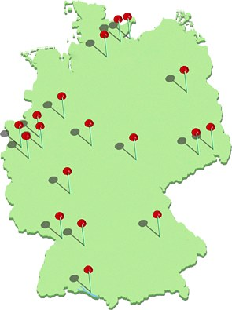

Stationen der Wanderschaft

Einzelausstellungen/Events
2006 - "Joanne Moar im Museum X" (Museum Abteiberg), Mönchengladbach, DE
2006 - "becoming german", Oberwelt e.V. Stuttgart, DE
2005 - "Zweite Heimat", Städtische Galerie & Stadtmuseum Iserlohn, DE
Gruppenausstellungen
2023 - "In der Fremde", Kauno Paveikslų Galerija, Kaunas, LT
2006 - "Out of Erewhon", CHCH Art Gallery Te Puna o Waiwhetu, CHCH, NZ
2006 - "Vencemeros/Sale". Kunstforum Ostdeutsche Galerie, Regensburg, DE
2005 - "Altitude", Kunsthochschule für Medien, Köln, DE
2004 - "MONITORING", Kulturbahnhof Kassel, DE
Festivals
2009 - "22. Stuttgarter Filmwinter", Online-Medien Ausstellung Stuttgart, DE
2006 - "Kunst im Kasten zu Gast im Zeppelin Museum", Friedrichshafen, DE
2006 - "Kunst Computer Werke" ZKM, Karlsruhe, DE (Preis Digital Sparks)
2005 - "In Between", Karneval der Kulturen, Hamburg, DE
Workshops / Vorträge
2007 - Vortrag, MAFLA Annual Conference Sturbridge, Massachusetts, U.S.
2007 - Workshop, University of Rhode Island Kingston, Rhode Island, U.S.
2007 - Workshop, Deering High School Portland, Massachusetts, U.S.A.
2006 - Vortrag, Die Wertanlage, Düsseldorf, DE
2005 - Vortrag, Dortmunder Kunstverein, DE
2005 - Vortrag, Kunstverein Gütersloh, DE
2005 - Besuch an der Gesamtschule Iserlohn, DE
Auf Wanderschaft
2005: Frankfurt, Dortmund, Gütersloh, Iserlohn, Schleswig-Holstein, Schleswig-Holstein, Mecklenburg-Vorpommern,
Berlin, Sachsen, Thüringen